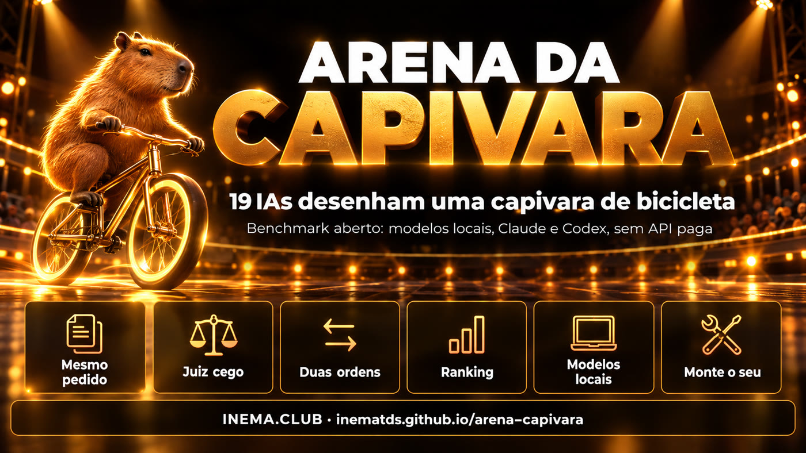

Benchmark aberto · modelos locais + assinatura · sem API paga
Qual IA desenha a melhor capivara de bicicleta?
Pedimos o mesmo desenho, em código SVG, a 19 modelos: 10 rodando no próprio computador e 9 pela assinatura do Claude e do ChatGPT. Um juiz comparou tudo dois a dois, sem saber quem fez o quê. O kit é aberto: rode com os seus modelos.
Simon Willison mede cada modelo novo pedindo "um SVG de um pelicano andando de bicicleta". Ele não confia nos leaderboards; prefere um teste próprio, que ele mesmo entende. O Google já mostrou o pelicano dele num keynote, então trocamos o bicho.

🦫 Difícil de propósito
Modelo de texto não desenha: ele escreve código. Bicicleta é difícil de lembrar, capivara é difícil de desenhar e capivara não pedala. Dá para ver na hora quem entende forma e composição.
⚖️ Juiz cego, duas ordens
O juiz vê só "A" e "B", sem nomes. Cada par aparece duas vezes, trocando os lados, para anular a mania de preferir a esquerda. Um segundo juiz de outra empresa refaz uma amostra.
💻 Roda em casa
Modelos locais pelo Ollama; Claude e GPT pelas CLIs claude e codex, usando a assinatura que você já paga. Nenhuma chave de API.
Rodada 1 · 05/10/2026
O pódio
Claude Fable 5.1 venceu 97% dos confrontos. A surpresa: Qwen 3.8 27B, rodando no próprio computador, ficou em 5º de 18, à frente do GPT-5.5 e do Claude Sonnet 5.5. Command R 35B não entregou SVG válido. O segundo juiz (GPT-6 Luna) concordou com o primeiro em 92% dos 64 confrontos que refez.
1º Claude Fable 5.1 · 97% de vitórias2º GPT-6.1 Sol · 94% de vitórias3º GPT-6 Astra · 91% de vitórias
Primeiro contra último. O juiz: "A mostra uma capivara reconhecível pedalando uma bicicleta bem desenhada, numa cena completa, enquanto B é só um conjunto de formas abstratas com texto sobreposto, sem capivara nem bicicleta identificáveis."Todos os desenhos válidos, do 1º ao último. Ranking completo, tempos e código de cada SVG →
Como funciona
Cinco scripts, um por etapa
Cada etapa grava em resultados/ e pula o que já foi feito. Dá para parar e continuar.
Manda o mesmo pedido a cada modelo de modelos.json, guarda a resposta crua e extrai o <svg>. Modelos locais rodam um por vez, para caber na memória.
Renderizar e julgar
Converte SVG em PNG (sem buscar nada na internet), monta as imagens A|B e pede ao juiz um JSON com o vencedor e o motivo.
Ranking e galeria
Taxa de vitória (o número mais honesto), ELO médio de 200 ordens sorteadas, viés de lado e concordância entre juízes. Gera a página pública em PT, EN e ES.
Pré-requisitos
O que precisa estar instalado
Só o primeiro é obrigatório. Use os motores que tiver; tire os outros do modelos.json.
Python 3.10+
Com cairosvg (SVG para PNG) e Pillow.
pip install cairosvg pillow
Ollama (local)
Qualquer modelo que você já tenha baixado. Um 8B roda em notebook; um 70B pede uns 48 GB de memória.
ollama pull llama3.1:8bollama list
Claude Code e/ou Codex
Opcional. Logados com a sua assinatura; o kit chama claude -p e codex exec.
claude --versioncodex --version
Guia de uso · passo a passo
Sua arena em seis comandos
Comece pequeno: dois ou três modelos. Depois aumente.
1
Baixe o kit
Os resultados da nossa rodada vêm junto, em resultados/. Apague a pasta se quiser começar do zero.
A capivara é só o exemplo. O método serve para o seu trabalho.
A lição da palestra não é "o modelo X desenha melhor". É: não terceirize a escolha do modelo para um leaderboard. Monte um teste pequeno que você entende e rode quando sair modelo novo.
1
Use uma tarefa suaResumir um contrato, responder um cliente, escrever um SQL. Ou algo bobo e difícil, como a capivara, que ninguém treinou para acertar.
2
Mesmo pedido para todos, guardado em arquivoSe o prompt muda entre modelos, você mede o prompt, não o modelo. Aqui é o arena/prompt.txt.
3
Guarde a resposta cruaQuando o resultado surpreender, você vai querer ver o que o modelo escreveu de verdade (resultados/respostas/).
4
Compare em pares, não dê nota"A ou B?" é muito mais estável que "dê uma nota de 0 a 10", para pessoas e para modelos.
5
Juiz cego, nas duas ordens, e meça o viésEsconda os nomes, troque os lados e publique quantas vezes a esquerda venceu. Use um segundo juiz e mostre a concordância.
6
Uma rodada é uma fotoRode de novo e os desenhos mudam. Para decidir algo sério, faça 3 a 5 tentativas por modelo.
7
Troque o tema quando ficar famosoTeste que vira notícia acaba entrando no treino. O pelicano virou capivara; a capivara também vai mudar.
Adaptar para outra tarefa
Troque o texto de arena/prompt.txt e a pergunta do juiz (PERGUNTA em arena/julgar.py). Se a saída for texto e não desenho, pule o renderizar.py e mande o juiz ler as duas respostas. Para usar o próprio histórico do Claude Code como teste, veja o personal-benchmark.
Próximas rodadas
O que vem depois
A arena fica aberta. Mande sua rodada por pull request.
Feito
Rodada 1 · 05/10/202619 modelos, uma tentativa cada, juiz Claude Sonnet 5.5 + amostra com GPT-6 Luna.
Próxima
Três tentativas por modeloPara separar o modelo bom do desenho de sorte.
Ideia
Rodadas da comunidadeCada pessoa roda com a máquina e os modelos que tem; o ranking junta as rodadas.
Irmão
Tríade LetalDa mesma palestra: quando um agente de IA pode vazar seus dados. Ver o checklist